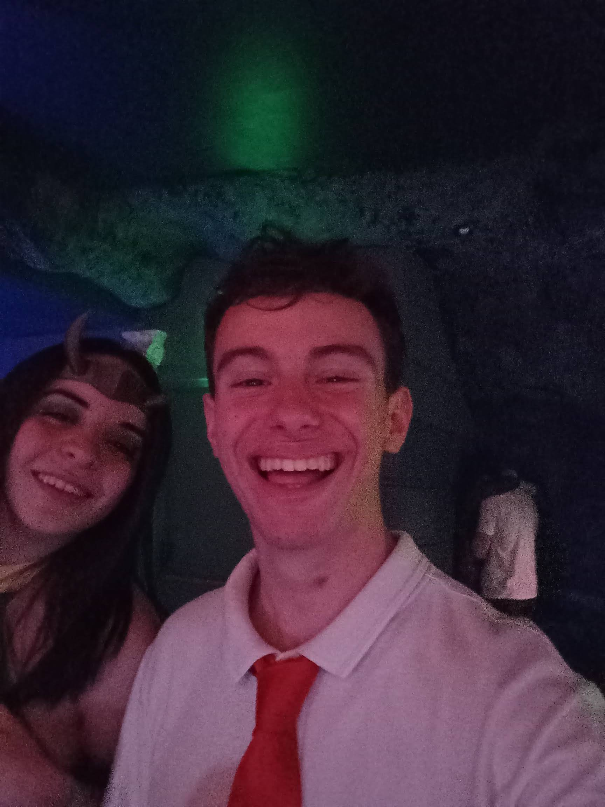
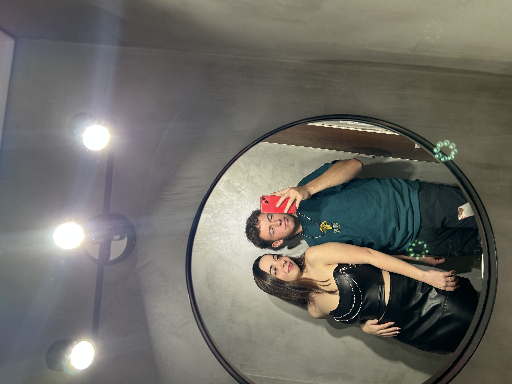
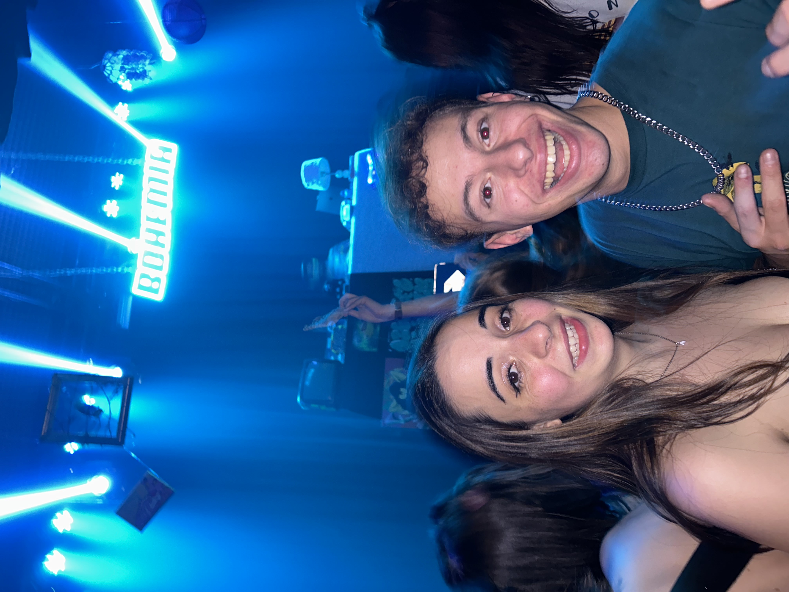
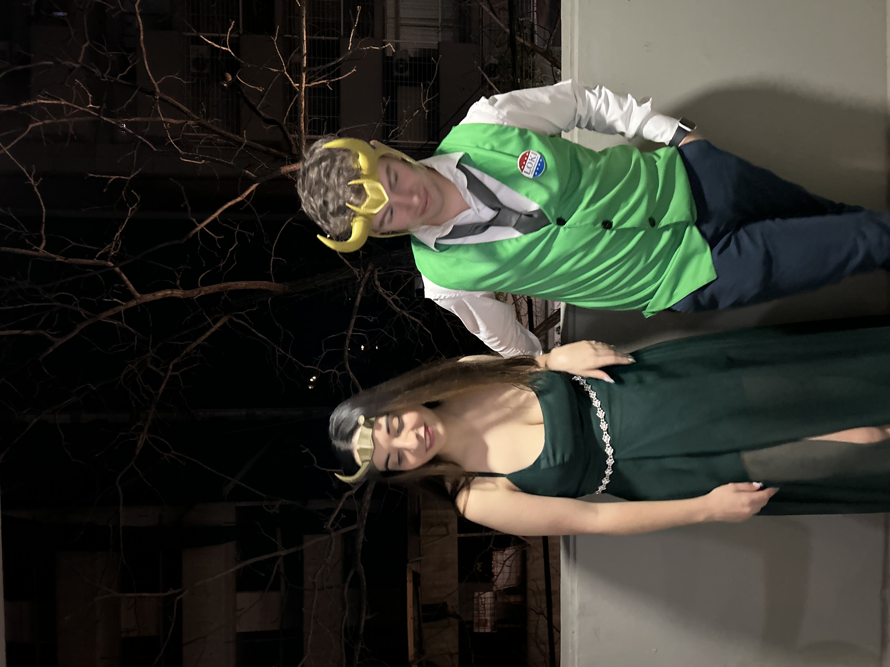
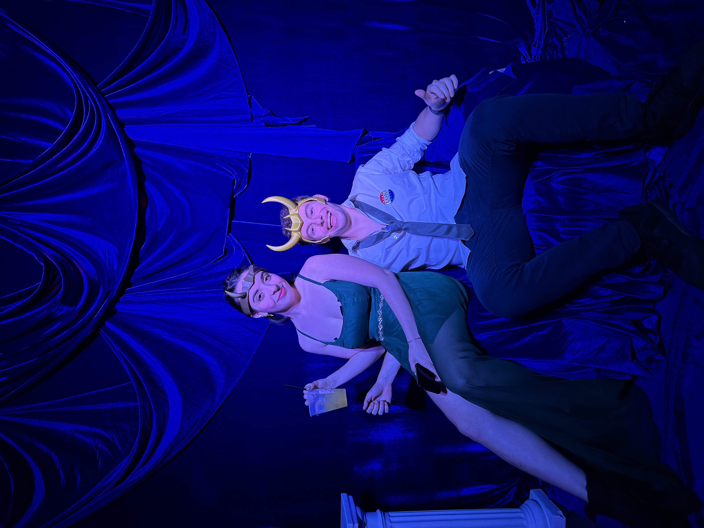

aca todavia no sabiamos como ibamos a terminar, podriamos haber tenido un desliz pero todavia no era el momento para nosotros. en fin, te dejo un par de recuerditos de ayer
foto outfit

fotografos

bellos

foton

te puedo chupar una teta?

lokis momento
este fue el recorrido por el pasado desde el primer dia hasta segundos antes del fin de una amistad hermosa